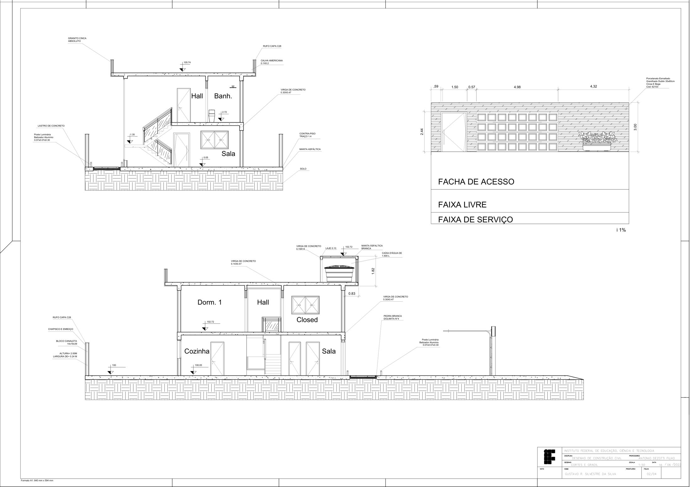
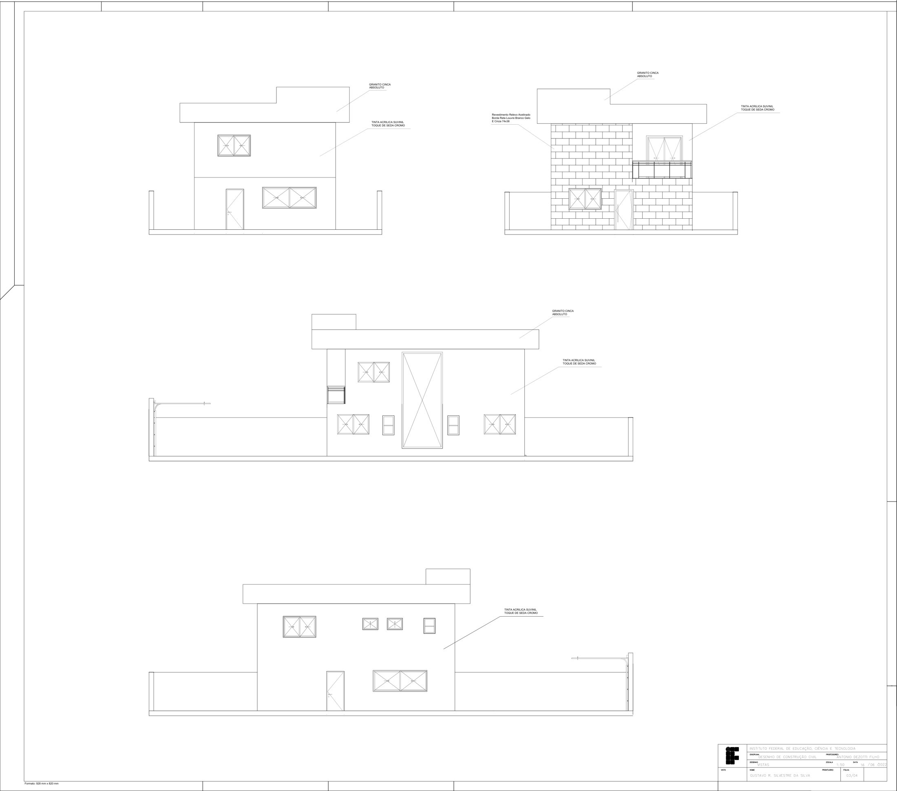
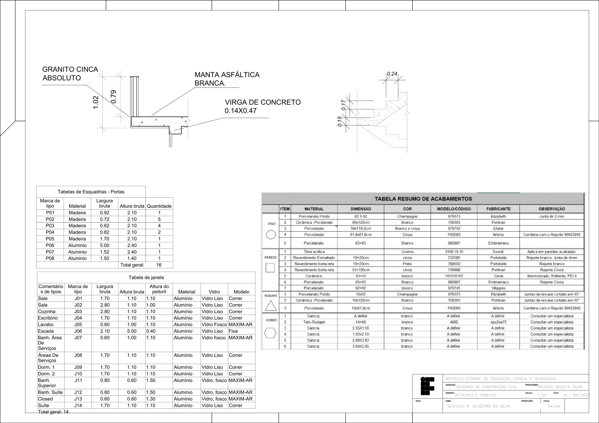

Objetivo
Representar uma residência de dois pavimentos em um conjunto de 4 pranchas de desenho técnico: plantas, cortes, vistas, detalhes construtivos e especificação de materiais.
Conteúdo das pranchas
- Folha 01/04: plantas do pavimento inferior, superior e cobertura (1:50)
- revestimentos de piso e soleiras em mármore;
- peitoris com caimento de 1%;
- alvenaria em blocos de 14×19×39 (externa) e 9×19×39 (interna);
- cobertura com inclinação de 15% e beiral de 0,76 m;
- caixa d'água de 1.500 L.
- Folha 02/04: cortes e gradil (1:50)
- rufo, chapisco e emboço, vergas de concreto;
- contrapiso no traço 1:4, manta asfáltica e calha;
- calçada com faixa de acesso, faixa livre e faixa de serviço;
- gradil com 2,00 m de altura.
- Folha 03/04: vistas (1:50)
- fachadas com a especificação dos acabamentos (granito, pintura acrílica e revestimento em relevo).
- Folha 04/04: detalhes e tabelas (1:20)
- detalhes construtivos;
- tabelas de esquadrias: 14 janelas e 16 portas.
Pranchas
Folha 01/04: plantas
Folha 02/04: cortes e gradil

Folha 03/04: vistas

Folha 04/04: detalhes e tabelas

O número de prontuário do aluno foi removido dos carimbos por privacidade.